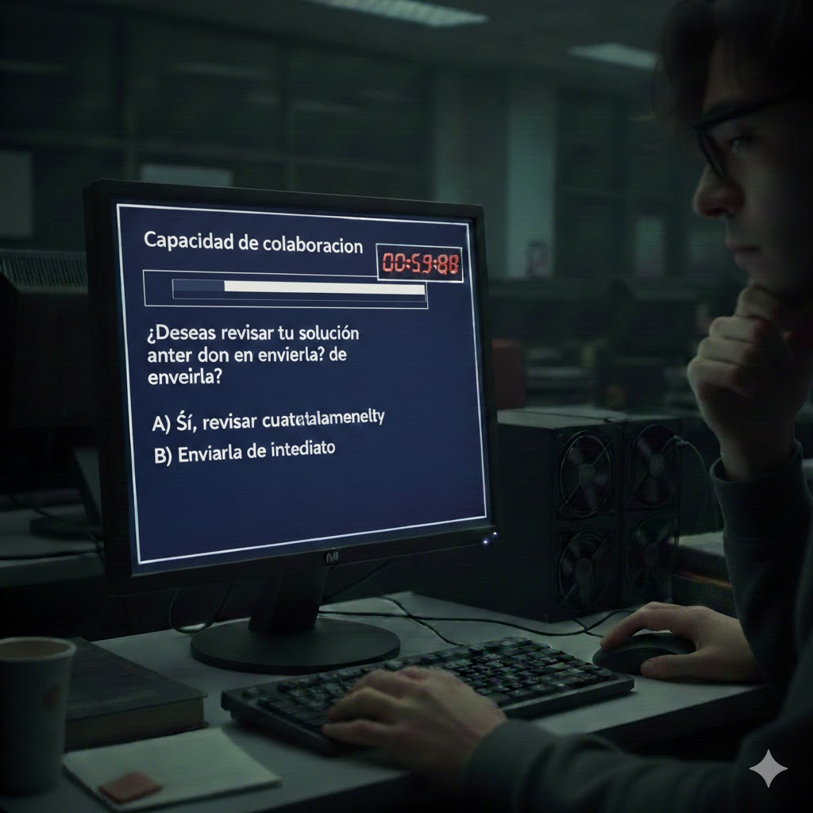

Decides compartir
El sistema indica:
“Capacidad de colaboración detectada.”
El temporizador vuelve a aparecer y la presión aumenta
El sistema acepta tu código y lo integra con el de otros participantes.
Sin embargo, notas algo extraño. Parte del código que compartiste incluye modificaciones hechas mientras explorabas la vulnerabilidad.
Minutos después, aparece un mensaje en pantalla:
“Actividad irregular detectada.”
El sistema comienza a cerrarse automáticamente.
